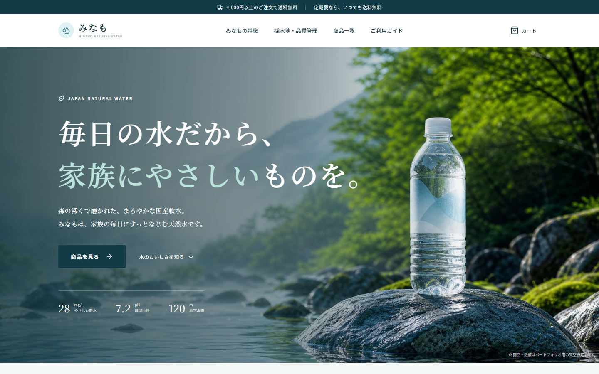
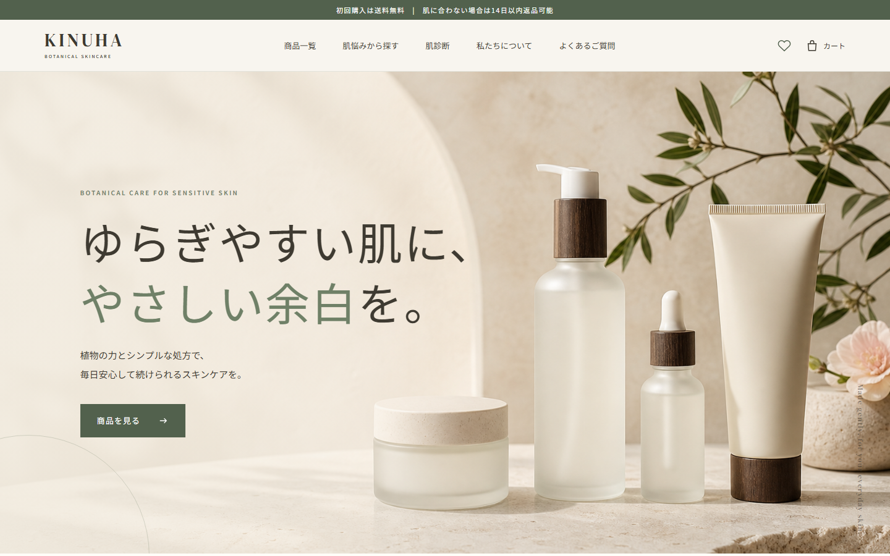
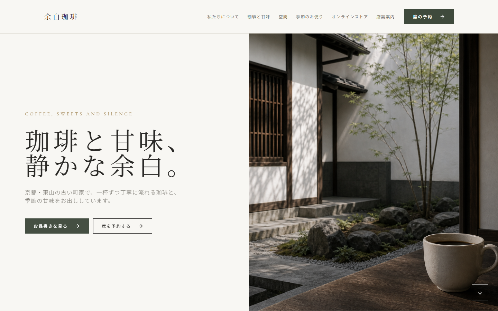

For small shops & businesses
お店の魅力を、
伝わるWebページに。
個人店舗・小規模事業者向けに、小さなLP制作を中心として、目的とお客様の行動を考えたWebページづくりをお手伝いしています。構成整理からデザイン、コーディング、スマートフォン対応まで丁寧に進めます。
- 企画・構成
- Webデザイン
- コーディング
伝える順番から一緒に考えます。
Works
制作実績
まずは美容サロン向けの1枚ものLPを掲載しています。下の3件は、表現や情報整理を学ぶために制作した補助実績です。
Sub Works
補助実績
以下は学習制作として作成した架空サイトです。機能の多さよりも、情報の見せ方、雰囲気づくり、導線設計の練習として掲載しています。



Services
対応サービス
学習制作で取り組んだ範囲をもとに、店舗・サービス紹介ページを丁寧にお手伝いします。
店舗・サービス紹介ページ
お店の雰囲気、メニュー、アクセス、予約前に知りたい情報を1ページに整理します。
情報整理・構成作成
初めて見る人が迷わないように、伝える順番や見出し、CTAの置き方を考えます。
静的ページの実装
HTML/CSS/JavaScriptを中心に、必要に応じてReactで見た目と動きを実装します。
スマホ対応・画像調整
スマートフォンでも読みやすい表示に整え、画像の軽量化やWebP化もできる範囲で対応します。
予約・送信・決済などの実用機能は、まずデモ表示まで対応できます。実運用化が必要な場合は、作業範囲を確認してご案内します。
About
はじめまして、
おうきと申します。
美容サロンLPや店舗サイト、商品紹介ページの学習制作を通して、伝えたい内容を整理し、読み手が迷わず判断できるページづくりを学んでいます。
髪や肌の悩み、商品の安心材料、店舗の雰囲気、予約前に知りたい情報などを、課題・目的に合わせて順番に並べることを大切にしています。
構成整理、文章作成、画面デザイン、HTML/CSS/JavaScriptやReactでの実装まで、今できる範囲を確認しながら丁寧に取り組みます。
- 肩書き
- Webデザイン・LP制作を学習中
- 対応
- オンライン
- 大切にしていること
- 情報を整理し、読み手が迷わず判断できる流れを考えること
Process
制作の流れ
初めてWeb制作を依頼する方にも、進み方を分かりやすくご案内します。
- 01
お問い合わせ
フォームから、現在のお悩みやご希望をお知らせください。
- 02
ヒアリング
目的、ターゲット、掲載内容についてオンラインで伺います。
- 03
お見積もり・進行目安のご案内
作業範囲を確認し、費用とスケジュールの目安をご案内します。
- 04
構成案の作成
伝える情報と順番を整理し、ページの設計図を一緒に確認します。
- 05
デザイン制作
構成案をもとに、配色・余白・文字の見やすさを整えながら画面を作成します。
- 06
コーディング
確認済みのデザインをHTML/CSSなどでWebページとして形にします。
- 07
表示確認・修正
各画面サイズで確認し、事前に決めた範囲で調整します。
- 08
お渡し・公開準備
最終確認後、HTML/CSSデータのお渡し、または静的ページの公開準備をお手伝いします。
Contact
まずは、今のお悩みを
お聞かせください。
「何を載せればよいか分からない」という段階でも大丈夫です。内容を整理しながら、必要なページを一緒に考えます。